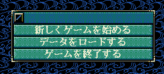

%(hilight)s
<div class="content-box mb-3 content-lighten">
    <h2><i class="fa fa-book fa-fw"></i>void カスタム::On_トップメニュー表示時()</h2>
    <div class="code">
        <pre class="brush:cpp">
void カスタム::On_トップメニュー表示時() {
}
</pre>
    </div>
</div>
<div class="content-box mb-3 content-lighten">
    <h3>タイミング</h3>
    <ul>
        <li>トップメニューが表示される際に、呼び出される。<br>
        <li>天翔記ゲーム内で、「最初からゲームをやり直す」等で、このトップメニューに戻ってきた際にも呼び出される。
            <p>
                </p>
    </ul>
</div>
<div class="content-box mb-3 content-lighten">
    <h3>一般的用途</h3>
    <ul>
        <li>「On_起動時()」のメソッドでは実行タイミングが早すぎて「何らかの不具合を起こす」。<br>
            そのような場合、もう少し遅いタイミングであるこのメソッドで初期化をしても良い。<br>
        <li>「『最初からゲームをやり直す』等で、トップメニューに戻ってきた際にも呼び出される」<br>
            という特性を活かした処理をするのに適している。<br>
            「現在プレイ中のゲームは終了」するが、天翔記自体は継続して立ち上げたまま「新しいゲーム」始めるといった際、<br>
            何らかの後片付け、処理停止などを必要とする際にも、このメソッドが利用できるだろう。<br>
    </ul>
</div>
<div class="content-box mb-3 content-lighten">
    <h3>例①</h3>
    <div class="code">
        <pre class="brush:cpp">
void カスタム::On_トップメニュー表示時() {
    デバッグ出力 &lt;&lt; &quot;トップメニュー表示時&quot; &lt;&lt; endl;
}
</pre>
    </div>
</div>